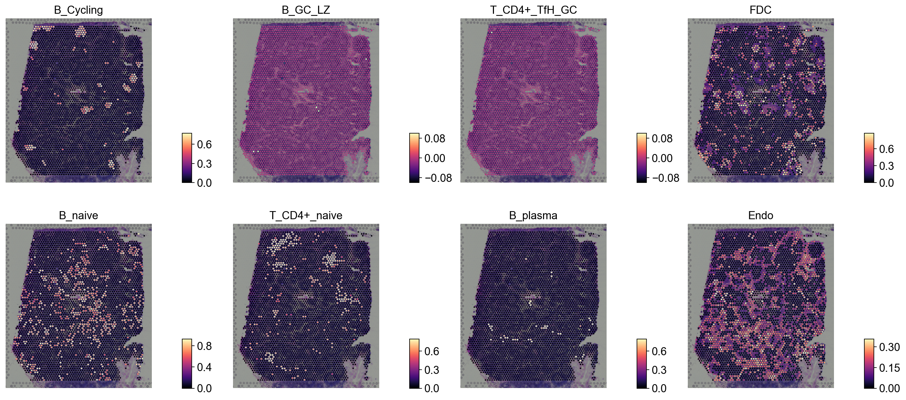

Spatial deconvolution with RCTD#
RCTD (Robust Cell Type Decomposition, Cable et al., Nat. Biotechnol. 2022) is the deconvolution method 10x Genomics officially recommends for Visium / Visium HD spot decomposition. The original implementation (spacexr) is in R; this notebook uses the pure-Python port rctd-py.
RCTD is wired through the same ov.space.Deconvolution class that already wraps Tangram and cell2location, so the API is identical to the other deconvolution backends — the only thing you change is method='RCTD'.
We exercise it on the same Lymph Node dataset used by the canonical t_decov tutorial, both loaded through omicverse helpers (no scanpy):
ov.datasets.sc_ref_Lymph_Node()— Lymph Node scRNA-seq reference (annotated bySubset)ov.datasets.visium_lymph_node()— 10x V1 Human Lymph Node Visium (downloads from the public 10x CDN on first call, then cached locally)
so the cell-type proportions can be compared directly against Tangram / cell2location runs in the existing tutorial.
Environment setup#
import omicverse as ov
ov.style(font_path='Arial')
import matplotlib.pyplot as plt
import numpy as np
import pandas as pd
%load_ext autoreload
%autoreload 2
%config InlineBackend.figure_format='png' # avoid retina; large H&E + pies overflow matplotlib PNG buffer
🔬 Starting plot initialization...
Using already downloaded Arial font from: /tmp/omicverse_arial.ttf
Registered as: Arial
🧬 Detecting GPU devices…
✅ NVIDIA CUDA GPUs detected: 1
• [CUDA 0] NVIDIA H100 80GB HBM3
Memory: 79.1 GB | Compute: 9.0
____ _ _ __
/ __ \____ ___ (_)___| | / /__ _____________
/ / / / __ `__ \/ / ___/ | / / _ \/ ___/ ___/ _ \
/ /_/ / / / / / / / /__ | |/ / __/ / (__ ) __/
\____/_/ /_/ /_/_/\___/ |___/\___/_/ /____/\___/
🔖 Version: 2.1.3rc1 📚 Tutorials: https://omicverse.readthedocs.io/
✅ plot_set complete.
Step 1: Prepare the scRNA-seq reference#
RCTD trains a per-cell-type expression profile from the scRNA-seq reference and uses it to fit each spatial pixel. The reference must contain raw counts in either adata.X or adata.layers['counts'] — RCTD’s likelihood model is defined over count data, not log-normalised values.
ov.datasets.sc_ref_Lymph_Node() ships counts in layers['counts'], so the integration picks them up automatically (and falls back to .X when the layer isn’t present).
adata_sc = ov.datasets.sc_ref_Lymph_Node()
print(adata_sc)
print()
print('cell types:', adata_sc.obs['Subset'].nunique())
print("counts layer present:", 'counts' in adata_sc.layers)
🧬 Loading SC reference data for Lymph Node
⚠️ File ./data/sc_ref_Lymph_Node.h5ad already exists
Loading data from ./data/sc_ref_Lymph_Node.h5ad
✅ Successfully loaded: 73260 cells × 10237 genes
AnnData object with n_obs × n_vars = 73260 × 10237
obs: 'Age', 'BCELL_CLONE', 'BCELL_CLONE_SIZE', 'Donor', 'ID', 'IGH_MU_FREQ', 'ISOTYPE', 'LibraryID', 'Method', 'Population', 'PrelimCellType', 'Sample', 'Sex', 'Study', 'Tissue', 'barcode', 'batch', 'doublet_score', 'index', 'predicted_doublet', 'percent_mito', 'n_counts', 'n_genes', 'S_score', 'G2M_score', 'phase', 'VDJsum', 'cell_cycle_diff', 'PrelimCellType_new', 'leiden', 'leiden_1', 'leiden_2', 'leiden_3', 'leiden_4', 'CellType', 'CellType2', 'Subset', 'Subset_Broad', 'Subset_all', 'new_celltype', 'Subset_int', 'Subset_print'
var: 'GeneID-2', 'GeneName-2', 'feature_types', 'feature_types-0', 'feature_types-1', 'gene_ids-1', 'gene_ids-4861STDY7135913-0', 'gene_ids-4861STDY7135914-0', 'gene_ids-4861STDY7208412-0', 'gene_ids-4861STDY7208413-0', 'gene_ids-Human_colon_16S7255677-0', 'gene_ids-Human_colon_16S7255678-0', 'gene_ids-Human_colon_16S8000484-0', 'gene_ids-Pan_T7935494-0', 'genome-1', 'n_cells', 'nonz_mean', 'mean_cov_effect_Subset_B_Cycling', 'mean_cov_effect_Subset_B_GC_DZ', 'mean_cov_effect_Subset_B_GC_LZ', 'mean_cov_effect_Subset_B_GC_prePB', 'mean_cov_effect_Subset_B_IFN', 'mean_cov_effect_Subset_B_activated', 'mean_cov_effect_Subset_B_mem', 'mean_cov_effect_Subset_B_naive', 'mean_cov_effect_Subset_B_plasma', 'mean_cov_effect_Subset_B_preGC', 'mean_cov_effect_Subset_DC_CCR7+', 'mean_cov_effect_Subset_DC_cDC1', 'mean_cov_effect_Subset_DC_cDC2', 'mean_cov_effect_Subset_DC_pDC', 'mean_cov_effect_Subset_Endo', 'mean_cov_effect_Subset_FDC', 'mean_cov_effect_Subset_ILC', 'mean_cov_effect_Subset_Macrophages_M1', 'mean_cov_effect_Subset_Macrophages_M2', 'mean_cov_effect_Subset_Mast', 'mean_cov_effect_Subset_Monocytes', 'mean_cov_effect_Subset_NK', 'mean_cov_effect_Subset_NKT', 'mean_cov_effect_Subset_T_CD4+', 'mean_cov_effect_Subset_T_CD4+_TfH', 'mean_cov_effect_Subset_T_CD4+_TfH_GC', 'mean_cov_effect_Subset_T_CD4+_naive', 'mean_cov_effect_Subset_T_CD8+_CD161+', 'mean_cov_effect_Subset_T_CD8+_cytotoxic', 'mean_cov_effect_Subset_T_CD8+_naive', 'mean_cov_effect_Subset_T_TIM3+', 'mean_cov_effect_Subset_T_TfR', 'mean_cov_effect_Subset_T_Treg', 'mean_cov_effect_Subset_VSMC', 'mean_sample_effectSample_4861STDY7135913', 'mean_sample_effectSample_4861STDY7135914', 'mean_sample_effectSample_4861STDY7208412', 'mean_sample_effectSample_4861STDY7208413', 'mean_sample_effectSample_4861STDY7462253', 'mean_sample_effectSample_4861STDY7462254', 'mean_sample_effectSample_4861STDY7462255', 'mean_sample_effectSample_4861STDY7462256', 'mean_sample_effectSample_4861STDY7528597', 'mean_sample_effectSample_4861STDY7528598', 'mean_sample_effectSample_4861STDY7528599', 'mean_sample_effectSample_4861STDY7528600', 'mean_sample_effectSample_BCP002_Total', 'mean_sample_effectSample_BCP003_Total', 'mean_sample_effectSample_BCP004_Total', 'mean_sample_effectSample_BCP005_Total', 'mean_sample_effectSample_BCP006_Total', 'mean_sample_effectSample_BCP008_Total', 'mean_sample_effectSample_BCP009_Total', 'mean_sample_effectSample_Human_colon_16S7255677', 'mean_sample_effectSample_Human_colon_16S7255678', 'mean_sample_effectSample_Human_colon_16S8000484', 'mean_sample_effectSample_Pan_T7935494'
uns: 'Age_colors', 'Donor_colors', 'LibraryID_colors', 'Method_colors', 'Study_colors', 'Subset_Broad_colors', 'Subset_colors', 'Tissue_colors', 'leiden', 'neighbors', 'pca', 'phase_colors', 'regression_mod', 'umap'
obsm: 'X_pca', 'X_umap'
obsp: 'connectivities', 'distances'
cell types: 34
counts layer present: False
Step 2: Prepare the spatial transcriptomics dataset#
ov.datasets.visium_lymph_node() downloads the public 10x V1 Human Lymph Node sample (filtered count matrix + spatial tarball) and reads it through ov.io.spatial.read_visium. Raw counts land directly in .X, which is what RCTD wants.
adata_sp = ov.datasets.visium_lymph_node()
adata_sp.obs['sample'] = list(adata_sp.uns['spatial'].keys())[0]
if 'counts' not in adata_sp.layers:
adata_sp.layers['counts'] = adata_sp.X.copy()
print(adata_sp)
🧬 Loading 10x V1 Human Lymph Node Visium data
[Visium] Reading Visium data from: /scratch/users/steorra/analysis/omicverse_dev/omicverse-test/notebooks/data/V1_Human_Lymph_Node
[Visium] Loading count matrix: filtered_feature_bc_matrix.h5
[Visium] Library ID: V1_Human_Lymph_Node
[Visium] Loading tissue positions: tissue_positions_list.csv
[Visium] Loading images and scale factors
[Visium] Done (n_obs=4035, n_vars=36601)
AnnData object with n_obs × n_vars = 4035 × 36601
obs: 'in_tissue', 'array_row', 'array_col', 'pxl_col_in_fullres', 'pxl_row_in_fullres', 'sample'
var: 'gene_ids', 'feature_types', 'genome'
uns: 'spatial'
obsm: 'spatial'
layers: 'counts'
Step 3: Run RCTD#
Construct the Deconvolution object exactly like for Tangram / cell2location and pass method='RCTD'.
Important note on preprocessing: unlike the Tangram / cell2location flow, we do not call preprocess_sc / preprocess_sp before RCTD. Those helpers replace .X with log-normalised values and subset to HVGs / SVGs — but RCTD’s likelihood model wants raw counts and selects its own informative gene set internally (the gene_cutoff / fc_cutoff controls in RCTDConfig). The integration pulls raw counts from layers['counts'] if present, otherwise from .X.
Mode choice: the rctd-py paper default mode='doublet' (each pixel = at most 2 cell types) matches the biology of a 55µm Visium spot and runs ≈4× faster than 'full'. The omicverse integration scatters doublet weights into the canonical adata_cell2location per-cell-type proportion matrix, so downstream visualisation is identical to the other backends.
Tutorial speed: sigma_override=84 skips the auto-calibration step (≈14 min on its own for this slide; 84 ≈ sigma_c=0.84 gives results bit-identical to R spacexr per the rctd-py docs), and config={'compile': False} skips torch.compile JIT (eager mode wins for one-off runs). Total RCTD wall-clock with these settings: ~2 min on a single GPU.
decov_obj = ov.space.Deconvolution(
adata_sc=adata_sc,
adata_sp=adata_sp,
)
✓ Existing 'counts' layer in spatial transcriptomics data
decov_obj.deconvolution(
method='RCTD',
celltype_key_sc='Subset',
rctd_kwargs={
# `mode='doublet'` is the rctd-py / R-spacexr paper default for
# spot-level Visium and is what 10x recommends. It assumes each
# pixel comes from at most 2 cell types — closer to the biology
# of a 55µm Visium spot — and is also the fastest mode
# (≈4× faster than 'full' on this dataset). The omicverse
# integration scatters the doublet weights back into a per-
# cell-type proportion matrix on `adata_cell2location.X`, so
# the same downstream visualisations work either way.
'mode': 'doublet',
'cell_min': 25, # drop reference cell types with < cell_min cells
'n_max_cells': 5000, # tutorial-time subsample of the reference
'min_UMI': 100,
# `sigma_override=84` skips RCTD's auto sigma-calibration step
# (this dataset's auto-calibration takes ~14 min on its own).
# `84` ≈ sigma_c=0.84 — the value RCTD's authors recommend as
# a starting point and what gives bit-identical results to R
# spacexr per the rctd-py docs. Drop the override to re-enable
# auto-calibration if you're running on a new tissue type.
'sigma_override': 84,
# batch_size: doublet mode enumerates C(K, 2) cell-type pairs
# per pixel into a single tensor. With K=33 cell types and
# 4035 spots the auto-default (200k spots/batch, sized for
# VisiumHD-scale slides) blows past the GPU's memory budget.
# 512 spots/batch fits comfortably and the per-batch overhead
# is negligible at this slide size.
'batch_size': 512,
# `compile=False` disables torch.compile JIT — eager-mode is
# the right choice for a single tutorial run; flip back to
# the default `True` on production batch runs that share a
# warm cache.
'config': {
'UMI_min': 100,
'UMI_max': 20_000_000,
'compile': False,
},
},
)
Running RCTD (mode='doublet') — this may take a while on full Visium slides.
UMI filter: kept 4033/4035 pixels (UMI range [100, 20000000])
Gene lists: bulk=3031, reg=1638 (from 10141 common)
Fitting bulk platform effects...
Using 1638 DE genes for pixel-level fitting
Using provided sigma override: 0.84
Running in doublet mode...
[doublet] Step 1/6: full-mode fit (4033 pixels, K=33)...
[doublet] Step 1 done (1046.3s)
[doublet] Step 3: pairwise scoring (437462 triples)...
[doublet] Step 3 done (20.2s)
[doublet] Step 4: singlet scoring (60795 singles)...
[doublet] Step 4 done (10.3s)
[doublet] Step 5: classification (4033 pixels)...
[doublet] Step 5 done (0.6s)
[doublet] Step 6: final decomposition (4033 pixels)...
[doublet] Step 6 done (0.2s)
[doublet] Total doublet mode: 1077.5s
✓ RCTD deconvolution is done
The deconvolution result is saved in self.adata_cell2location
Cell type proportions are also stored in self.adata_sp.obsm['rctd_proportions']
The full RCTD result object is saved in self.rctd_result
Step 4: Inspect the result#
decov_obj.adata_cell2location is the canonical omicverse output — a (kept_pixels × n_cell_types) AnnData of row-normalised proportions, with the spatial coordinates / obsm carried over from adata_sp. Same shape Tangram and cell2location populate, so all the downstream plotting in the existing t_decov tutorial works unchanged.
Two extras that are RCTD-specific:
decov_obj.rctd_result— the rawFullResult/DoubletResultobject fromrctd-py, with the unnormalisedweights, thepixel_mask(which pixels passed the UMI filter), andconvergedflags per pixel.decov_obj.adata_sp.obsm['rctd_proportions']— the same proportion matrix re-indexed back onto every pixel of the originaladata_sp(filtered pixels get all-zero rows). Convenient forov.pl.spatial(color=<cell_type>).
decov_obj.adata_cell2location
AnnData object with n_obs × n_vars = 4033 × 33
obs: 'in_tissue', 'array_row', 'array_col', 'pxl_col_in_fullres', 'pxl_row_in_fullres', 'sample'
uns: 'spatial'
obsm: 'spatial'
props = np.asarray(decov_obj.adata_cell2location.X)
print('row-sums (proportion check) min/max:', props.sum(axis=1).min(), props.sum(axis=1).max())
print('top cell types by mean proportion:')
ct_mean = decov_obj.adata_cell2location.X.mean(axis=0)
print(pd.Series(ct_mean, index=decov_obj.adata_cell2location.var_names)
.sort_values(ascending=False).head(10))
row-sums (proportion check) min/max: 1.0 1.0
top cell types by mean proportion:
Macrophages_M1 0.264252
B_mem 0.151441
FDC 0.130530
B_naive 0.129809
Endo 0.095163
T_Treg 0.081916
T_CD4+_naive 0.052711
B_Cycling 0.029198
Macrophages_M2 0.028264
VSMC 0.009828
dtype: float32
Step 5: Spatial visualisation#
Re-using the same panel of canonical lymph-node markers as the t_decov tutorial so the RCTD output is directly comparable to the Tangram / cell2location results in that notebook.
annotation_list = ['B_Cycling', 'B_GC_LZ', 'T_CD4+_TfH_GC', 'FDC',
'B_naive', 'T_CD4+_naive', 'B_plasma', 'Endo']
available = [a for a in annotation_list if a in decov_obj.adata_cell2location.var_names]
print('Plotting:', available)
ov.pl.spatial(
decov_obj.adata_cell2location,
color=available,
cmap='magma',
ncols=4,
img_key='hires',
vmin=0, vmax='p99.2',
frameon=False, # workaround: frameon='small' renders the axis arrow as a separate subplot per panel
)
Plotting: ['B_Cycling', 'B_GC_LZ', 'T_CD4+_TfH_GC', 'FDC', 'B_naive', 'T_CD4+_naive', 'B_plasma', 'Endo']
{kind=link}

5.2 Multi-cell-type overlay#
RCTD’s per-pixel proportion matrix can be drawn as an overlapping multi-channel image — one cell type per channel — to read out fine-grained tissue architecture (e.g. germinal-centre vs. naive-B regions in the lymph node).
color_dict = dict(zip(adata_sc.obs['Subset'].cat.categories,
adata_sc.uns['Subset_colors']))
clust_labels = available[:5]
clust_col = [str(c) for c in clust_labels]
import matplotlib as mpl
with mpl.rc_context({'figure.figsize': (6, 6), 'axes.grid': False}):
fig = ov.pl.plot_spatial(
adata=decov_obj.adata_cell2location,
color=clust_col,
labels=clust_labels,
show_img=True,
style='fast',
max_color_quantile=0.992,
circle_diameter=4,
colorbar_position='right',
)
{kind=link}
Summary#
We added RCTD as a new backend to ov.space.Deconvolution. The integration:
accepts the same
(adata_sp, adata_sc)constructor as Tangram / cell2location,automatically pulls raw counts from
adata.layers['counts'](or falls back to.X),forwards every RCTD knob through
rctd_kwargs(mode / cell_min / batch_size / sigma_override / aconfigdict forRCTDConfig),reshapes the
FullResult/DoubletResult/MultiResultinto the canonicaladata_cell2locationschema (pixels × cell-types proportion matrix, row-sums = 1),preserves the spatial
obsmso all the existing visualisation helpers (ov.pl.spatial,ov.space.crop_space_visium,ov.pl.plot_spatial,ov.pl.add_pie2spatial) work unchanged.
Compared with the other backends already in the tutorial:
Method |
Speed (this dataset) |
GPU? |
Notes |
|---|---|---|---|
Tangram |
15–30 min |
yes |
Mapping-based; needs HVG preprocessing |
cell2location |
30–120 min |
recommended |
Bayesian; large |
RCTD |
5–15 min |
yes ( |
No SVG/HVG step; uses raw counts directly |